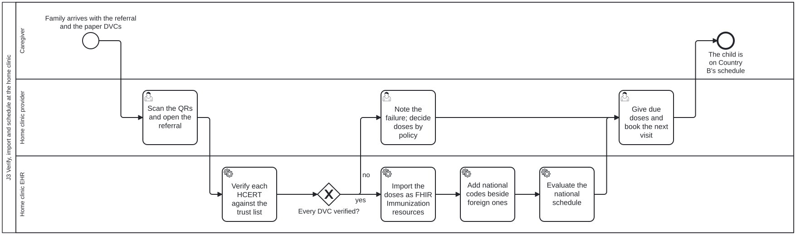

Карта пути
Читайте по горизонтали, чтобы следить за одним человеком. Читайте по вертикали, чтобы увидеть всех в один момент. Нажмите на столбец, чтобы изучить его.
Вводит дозы Hep B и BCG при рождении и печатает две подписанные карточки вакцинации с QR-кодом.
«Он не гражданин Тайфафеки, но ему всё равно нужна запись, которую можно увезти домой».
Сканирует QR-код, вводит код доступа, который называет ему Bounmy, и видит все шесть доз.
«Родился здесь, вакцинирован там — и я вижу всё это».
Рождается и в течение нескольких часов получает дозы Hep B и BCG при рождении.
«Два маленьких укола — и запись, которая пойдёт с ним дальше».
Добавлен в своё домохозяйство: онесская система здравоохранения теперь знает о его существовании.
«Три недели от роду — и теперь он учтён».
Снова в Кесаро, с температурой, его осматривает врач, который вакцинировал его при рождении.
«Незнакомая комната, но никому не нужно гадать, какие прививки он получил».
Рожает вдали от дома и при выписке получает две бумажные карточки.
«Поверит ли кто-нибудь дома этим бумагам?»
Рассказывает Vilay о родах в Тайфафеки и показывает карточки.
«Надеюсь, у нас не будет проблем из-за родов за границей».
Получает направление в районный медицинский центр.
«Ещё одна поездка — но теперь хотя бы знают о его прививках».
Приводит Somsak на визит по направлению.
«Они верят тайфафекским бумагам!»
Уходит с датой следующих прививок Somsak.
«Теперь я точно знаю, когда прийти снова».
Полагается на телефон Bounmy в том, что касается её собственных записей и записей малыша.
«Это у него в телефоне. А если я поеду без него?»
Наблюдает, как врач видит всё, что произошло с момента рождения.
«Всё это последовало за ним».
Сканирует обе карточки с QR-кодом и считывает дозы, не проверяя их подписи.
«Я могу это прочитать, но здесь не могу доказать, что это подлинник».
Добавляет Somsak в домохозяйство Sengmany, сохраняет две дозы как непроверенные и оформляет направление в клинику.
«Сигнала нет уже несколько недель — но мне нужно зарегистрировать его сегодня».
Подтверждает сведения о домохозяйстве как глава домохозяйства.
«Хорошо, теперь он есть в нашей семейной записи».
Открывает семейный кошелёк: профили для себя, Khamla и Somsak.
«Один телефон, три человека — я справлюсь за всех нас».
Создаёт для Somsak QR-ссылку, защищённую кодом доступа и действительную 14 дней.
«Я решаю, кто это увидит и как долго».
Показывает QR-код на своём телефоне и вслух называет код доступа.
«На этот раз никакой папки с бумагами».
Сканирует карточку; планшет подтверждает тайфафекскую подпись и отмечает дозы как проверенные.
«Зелёная галочка — я могу доверять больнице, о которой никогда не слышала».
Confirms the Taifafeki product equals the Onesan birth dose; gives the overdue 6-week vaccines.
«Название другое, вакцина та же — это решение я могу принять».
2 подписанные бумажные карточки (Hep B, BCG)
Хранится: сумка KhamlaДозы считаны с 2 карточек; пока ничего не сохранено
Хранится: бумажные карточки + телефон CHWМладенец зарегистрирован; 2 дозы сохранены как «заявленные семьёй»
Хранится: телефон CHW (ожидает синхронизации)Дозы проверены; Тайфафеки записан как источник
Хранится: записи районной клиникиДозы при рождении засчитаны; следующий приём назначен
Хранится: национальные медицинские записи ОнесыСводка за 12 месяцев: 2 тайфафекские + 4 онесские дозы
Хранится: национальные записи Онесы + семейный кошелёкСсылка для обмена создана; данные остаются в Онесе
Хранится: национальные записи Онесы (QR-код — лишь указатель)Просмотрено в Тайфафеки, не скопировано; доступ зарегистрирован в Онесе
Хранится: национальные записи ОнесыУ младенца нет тайфафекского идентификационного номера, поэтому его записи обычно оставались бы запертыми в системе тайфафекской больницы.
Без проверки поддельная или заполненная с ошибкой карточка может незаметно стать официальной записью.
Дети, родившиеся за рубежом, невидимы для системы здравоохранения страны проживания, пока не будет завершена регистрация актов гражданского состояния — иногда спустя месяцы.
Клиницисты либо не доверяют иностранным бумажным документам и вакцинируют повторно, либо доверяют им слепо.
Страны по-разному называют и комплектуют вакцины, поэтому дозы пропускаются или повторяются.
Многие семьи пользуются одним смартфоном; решения по принципу «одно приложение на человека» исключают их.
Отправка фотографий или PDF-файлов записей приводит к утечке данных, а получатель не может их проверить.
Без истории врачу пришлось бы повторять вакцинацию или действовать наугад.
Карточка с QR-кодом, подписанная цифровой подписью, путешествует вместе с семьёй — не нужны ни идентификационный номер, ни поиск в базе данных.
Телефон считывает карточку в автономном режиме и чётко разделяет «что нам сообщила семья» и «что мы проверили».
Автономная форма сразу связывает младенца с его домохозяйством; она синхронизируется, как только телефон находит сигнал.
Ключ подписи Тайфафеки находится в общем списке доверия ВОЗ, поэтому любая клиника может проверить его локально.
Исходный тайфафекский код сохраняется, а онесский добавляется рядом; механизм графика рассчитывает, какие дозы положены.
Семейный кошелёк на одном телефоне с отдельной сводкой о здоровье для каждого человека.
Проверяемая ссылка на медицинские данные: QR-код содержит лишь защищённый указатель; данные остаются на родине, пока не назван код доступа.
Запись извлекается в реальном времени из Онесы, просматривается без копирования, а журнал доступа отправляется на родину.
Тайфафекская больница → Семья (бумага)
Напечатанный QR-кодБез связиБумажная карточка → телефон CHW
Сканирование камеройБез связиKhamla (устно) + декодированные карточки → телефон CHW → национальный сервер (при синхронизации)
Автономная форма (FHIR Questionnaire), затем синхронизация через Info GatewayБез связиБумажная карточка → планшет клиники
Сканирование камерой + локальная проверка по списку доверияБез связиПланшет клиники → национальный FHIR-сервер Онесы
FHIR API через Info GatewayВ сетиНациональный FHIR-сервер Онесы → Семейный кошелёк
FHIR API (HTTPS) через Info GatewayВ сетиСемейный кошелёк → национальный сервер Онесы
HTTPSВ сетиНациональный сервер Онесы → программа просмотра тайфафекской клиники
HTTPS (получение VHL) через границуВ сетиДве бумажные карточки отправляются домой вместе с Khamla
Дозы, считанные, но не проверенные, попадают в регистрацию
Направление в районный медицинский центр
Проверенные дозы, готовые к включению в график
Somsak продолжает вакцинацию по онесскому графику в течение года
Сводка Somsak готова к передаче
QR-код на телефоне папы + код доступа, который он может назвать вслух
Путь завершён — полный круг обратно в Тайфафеки
 J1 Выдать DVC новорождённого на дозы при рождении в стране AПользовательский сценарий в IGBPMN
J1 Выдать DVC новорождённого на дозы при рождении в стране AПользовательский сценарий в IGBPMN J2 Выявить и направить незарегистрированного младенца в стране BПользовательский сценарий в IGBPMNJ2 Выявить и направить незарегистрированного младенца в стране BПользовательский сценарий в IGBPMN
J2 Выявить и направить незарегистрированного младенца в стране BПользовательский сценарий в IGBPMNJ2 Выявить и направить незарегистрированного младенца в стране BПользовательский сценарий в IGBPMN
J3 Проверить, импортировать и составить график в клинике по месту жительстваПользовательский сценарий в IGBPMN J4.0 Выдать записи семьи на один телефон в виде VHLПользовательский сценарий в IGBPMN
J4.0 Выдать записи семьи на один телефон в виде VHLПользовательский сценарий в IGBPMN J4.1 Прочитать записи члена семьи в месте оказания помощи за границейПользовательский сценарий в IGBPMN
J4.1 Прочитать записи члена семьи в месте оказания помощи за границейПользовательский сценарий в IGBPMNОнесский младенец рождается в Тайфафеки
Somsak получает прививки при рождении в тайфафекской больнице — и единственное, что пересечёт с ним границу, — это пара бумажных карточек.
Медицинский работник находит младенца — и считывает его карточки
Во время планового посещения деревни Vilay находит новорождённого, о существовании которого онесская система не знает. Она может прочитать сведения о вакцинах на его карточках, но не может доказать их подлинность.
Зарегистрирован дома и направлен
Без сигнала Vilay добавляет Somsak в его домохозяйство, сохраняет его дозы как «заявленные» и направляет семью в клинику.
Клиника подтверждает подлинность карточек
Медсестра Chanthason сканирует карточку, и её планшет проверяет цифровую подпись Тайфафеки по списку доверия ВОЗ — не обращаясь к Тайфафеки.
Тайфафекские вакцины вписываются в онесский график
Тайфафекский продукт Hep B не соответствует ничему в онесском графике. Chanthason принимает клиническое решение, а система определяет, что положено дальше.
Один телефон хранит записи всей семьи
Год спустя семья планирует поездку в Тайфафеки. На телефоне Bounmy хранятся записи всех троих, включая шесть проверенных доз Somsak.
Папа создаёт ссылку, чтобы показать её в клинике
Перед поездкой Bounmy создаёт QR-ссылку на запись Somsak, защищённую 4-значным кодом доступа и действительную 14 дней (это настройки демонстрации: каждая страна установит свои). Сама запись остаётся в Онесе.
Тайфафекский врач видит всю историю
Там, где всё началось, доктор Anan сканирует ссылку, слышит код доступа и видит весь первый год жизни Somsak, а Онеса получает сведения о том, кто просматривал запись.